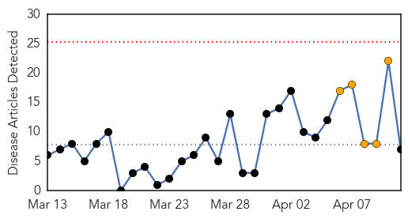
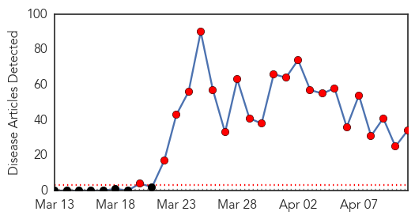
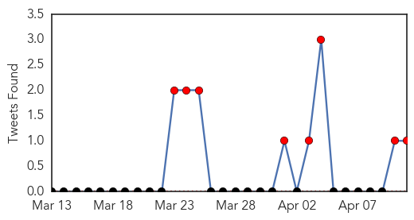
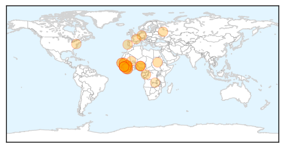
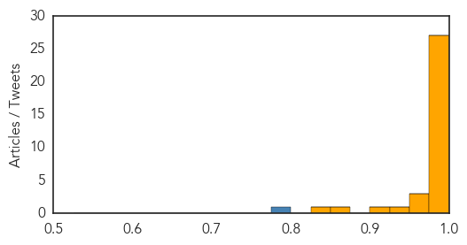

Measles
30-Day Web Trend
0 alerts, 5 warnings

30-Day Twitter Trend
0 alerts, 0 warnings

Article Locations

Article Confidences

Top Articles:
- 0.898
- Traveling abroad? Get 2 measles doses 28 days apart
- 0.848
- Measles alert prompts warnings about parents forgoing vaccines for kids
- 0.833
- In Central African Republic, a health system on the brink of collapse
- 0.694
- Singaporeans infected by measles outbreak in the Philippines
- 0.625
- Editorial: Parents, vaccinate your kids
- 0.595
- Measles In Manitoba: Anti-Vaccine Mom Feels Bullied
- 0.541
- Measles outbreak spreads to Kitsap County, passengers on ferry Tacoma to Bainbridge may have been exposed to virus
Top Tweets:
-
No tweets found for Apr 11, 2014
Ebola
30-Day Web Trend
22 alerts, 0 warnings

30-Day Twitter Trend
14 alerts, 0 warnings

Article Locations
Article Confidences
Top Articles:
- 1.000
- DFA updates travel advice for Irish citizens, following Ebola outbreak
- 1.000
- Canadian doctor on front lines treating Ebola patients in West Africa
- 1.000
- Ebola, Lassa fever and the bush meat connection
- 1.000
- Portugal Ebola scare unfounded but authorities take measures
- 1.000
- Ebola outbreak stalls some West Africa travel
- 1.000
- Shocking truths about Ebola Virus Disease
- 1.000
- The Ebola Outbreak 3 Weeks In: Dire But Not Hopeless
- 1.000
- Ebola Updates and an Interview
- 1.000
- Russian Doctors Would Immediately Recognize Ebola – Watchdog
- 0.999
- Ebola virus disease, West Africa – update
- 0.999
- Ebola outbreak in Guinea ‘could become regional epidemic’
- 0.999
- International Aid Providers Join Hands To Stop Further Ebola Spread!
- 0.999
- Aid Groups Take Emergency Steps against Ebola Onslaught — Naharnet
- 0.999
- Ebola outbreak empties West African hotels
- 0.999
- Ebola Virus Disease Outbreak in West Africa 158 Cases, 101 Deaths
- 0.999
- The foreign ministry is helping support stopping the spread of the Ebola virus in Africa - Guinea
- 0.998
- Rise Of A Deadly Disease; Health Minister, Former Nigeria Vice President, Seeks Measures
- 0.998
- Ebola in West Africa: EU increases its immediate health assistance to €1.1 million
- 0.998
- No Ebola Virus In Ghana – Epidemiologist
- 0.998
- Ebola in West Africa: EU increases its immediate health assistance to €1.1 million
- 0.997
- EUR1.1 Million Emergency Aid To Contain Spread Of Ebola In West Africa
- 0.996
- Guinean Ebola survivor tells of being 'reborn'
- 0.995
- Ghana testing blood samples of suspected Ebola case - Emirates 24
- 0.994
- Guinean Ebola survivor tells of being ‘reborn’
- 0.990
- EU increases assistance in Africa to stop Ebola from expanding - Xinhua
- 0.984
- UPDATE 1-Fatal virus in Ghana tests negative for Ebola
- 0.982
- UN AND AFRICA: Rwanda genocide remembered 20 years on
- 0.969
- The Ebola Survivors: Reborn But Not Always Embraced
- 0.968
- The race to contain West Africa's Ebola outbreak (Wired UK)
- 0.963
- Reborn But Not Always Embraced
- 0.930
- Ebola drug could be ready for human testing next year
- 0.915
- MSF resumes activities in Ebola centre in southeast Guinea
- 0.860
- Game Plan Against Epidemics and Access to Quality Healthcare Receive Attention 2014-04-11
- 0.828
- Online army helps map Guinea's Ebola outbreak
Top Tweets:
- 0.778
- off to conakry guinea to investigate wide spread ebola outbreak. I have been to many hot zones, but nothing like this.